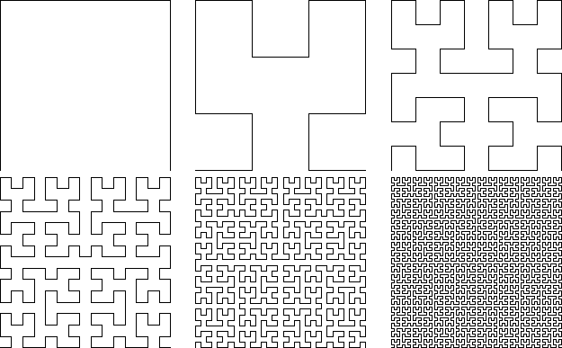

Take the alphabet
| F -> F |
| + -> + |
| - -> - |
| x -> -yF+xFx+Fy- |
| y -> +xF-yFy-Fx+ |
The prodction sequence begins
x -> -yF+xFx+Fy- -> - +xF-yFy-Fx+ F+ -yF+xFx+Fy- F -yF+xFx+Fy- +F +xF-yFy-Fx+ -
= xF-yFy-Fx+FyF+xFx+Fy-F-yF+xFx+FyF+xF-yFy-Fx
We give F, +, and - these interpretations
| F means move one step forward while drawing a line |
| - means turn counterclockwise by 90 degrees |
| + means turn clockwise by 90 degrees |
Starting from a horizontal line segment, here are the geometric realizations of the first six steps.
|  |
With this rescaling, we get the sense that successive steps converge to a limiting shape, and that shape appears to fill a square. In fact, this is a way to construct Hilbert's space-filling curve.
Return to Background